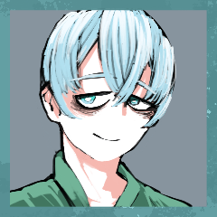

GM
ではお揃いのようなので、はじめてまいりましょう。 GM
シノビガミ「出口なし」セッション開始いたします。よろしくお願いします！ GM
とある地方の山中。ぽつりと建つ古びた木造の病院の入院病棟、2階の203号室。
ベッドに腰掛けた患者の傍らに、ひとりの医師が腰掛けて話を聞いている。
患者は言う。何か大きな罪を犯したのに、それが何なのか思い出せない。
静かな病室で、カウンセリングは続く。
病室の外に人影はない。長い廊下を見渡しても、階下に降りたとしても。
生きて動く者は一人もいない。
ただ、203号室から、話し声がぽつぽつと無人の廊下に漏れ聞こえている。
（――数か月前、忍務の帰途で大怪我を追った忍者をこの病院の医師の1人が保護した。
隠れ潜む忍者であったその医師は、同情か仁愛か気紛れか、傷ついた忍者が身元を隠して心身を癒せるように尽力した。
病院の人々は患者をあたたかく遇し、忍者は生まれて初めて味わうような静かで安らかな日々を過ごした。
その束の間の静穏が、壊れる日までは）
その日壊れたものは、ほんとうは何だったのだろう。
真実は何処に？
――さあ、先生。あなたの患者が待っています。 GM
ということで、病院に先生と患者さん、二人きりのお話となります。 GM
続いてキャラ紹介をやっていただきましょう。
GMから導入と使命を貼りますので、そのあとにキャラシートの公開とキャラ紹介をお願いします。 GM
【導入】
あなたは数か月前PC2に救われ、この病院に入院している患者である。
何か大きな罪を犯したのに、それが何なのか思い出せない。
何らかのショックによる一時的な記憶障害だろうと医師は言う。
あなたの【使命】は記憶を取り戻すことである。 スズシロ
◆PC1キャラクターシート
https://character-sheets.appspot.com/shinobigami/edit.html?key=ahVzfmNoYXJhY3Rlci1zaGVldHMtbXByFwsSDUNoYXJhY3RlckRhdGEY1ra5rwUM 
スズシロ
菘 清白（スズナ スズシロ）といいます。 スズシロ
好きなものや、事は覚えているようなので、よかった。 スズシロ
この状態では恩を返せないのが心苦しいくらい、良くしてもらってます。 GM
続いては先生の方に自己紹介をしていただきましょう GM
【導入】
あなたはこの病院の医師である。何らかの理由で隠れ潜む忍者であったあなたは、同情か仁愛か気紛れか、数か月前にPC1を匿い、その主治医をつとめてきた。
体の傷が癒えたというのに、PC1は何らかのショックで起きた記憶障害に悩んでいる。
あなたの【使命】はPC1に記憶を取り戻させることだ。 木兎乃
◆PC2キャラクターシート
https://character-sheets.appspot.com/shinobigami/edit.html?key=ahVzfmNoYXJhY3Rlci1zaGVldHMtbXByFwsSDUNoYXJhY3RlckRhdGEY99-IvgUM [編集済] 木兎乃
築久地 木兎乃（つきくじ つくの）と申します。 木兎乃
スズシロさんの主治医を務めさせていただいてます。 木兎乃
患者さんには精一杯優しくするのがモットーです。 木兎乃
スズシロさんがこれから記憶を取り戻すお手伝いができるように頑張りたいのですが……今は成果が出ていないのが現状です。 木兎乃
今日は、なにか手掛かりが掴めるといいんですが。 木兎乃
では、診察を始めましょうか。
よろしくお願いしますね。 GM
ありがとうございます！こちらも穏やかで優しい先生だ。 GM
では、このお二人でやってまいりましょう。よろしくお願いします！ GM
街はイルミネーションに彩られ、その中を家族や友人、恋人達が賑わせる頃。 GM
普段は街の喧騒とは遠く離れたこの病院でも、今日はクリスマスパーティーが執り行われる。 木兎乃
安っぽい三角帽子をかぶり、ケーキの前で拍手をする。 スズシロ
「メリー・クリスマス。ケーキまでご用意いただいちゃって」 木兎乃
「流石にケーキ屋さんのは売り切れてたので、その辺のスーパーのですが。
それでもやっぱりあるとわくわくしますよね～」 スズシロ
「どんなケーキでも、先生が選んで、僕と食べてくれるならなんでも嬉しいですよ」 木兎乃
紙皿に乗った一切れのケーキを、プラスチックのフォークと共に。 スズシロ
持った紙皿も、フォークも、大男が持つと小さく見える。 木兎乃
「そうですねえ。最近のスーパーはずいぶんと味が良くなって」 木兎乃
平均的な女性くらいの背丈で並ぶと、まるで子供のようだ。 スズシロ
「先生はサンタさんにプレゼントを頼みましたか？」 木兎乃
「そうですねえ、私はあげる側ですから……」 木兎乃
「サンタさんにプレゼントをくれる人はいるんでしょうか？」 スズシロ
「サンタさんへのプレゼントは、きっと、翌日の子どもたちの笑顔ですよ」 スズシロ
「僕も今回は記憶が戻りますように、とお願いしてて」 スズシロ
「戻ったら、サンタさんにありがとうを言うつもりなんです」 木兎乃
「あなたが笑顔でサンタさんにお礼を言えるように、私も頑張らないといけませんね」 スズシロ
「本当、先生にはなんとお礼を言ったらいいか……」 木兎乃
「まだお礼を言ってもらえるようなことはできてませんよ」 スズシロ
「いえ、ここに置いていただけるだけでも」 木兎乃
穏やかに微笑んでいる。
林檎のような甘い色をした目で見つめている。 木兎乃
大きな手が包み込むのに任せて、ゆるく握り返した。 スズシロ
触れている箇所が、二人の体温で暖かくなっていく。 GM
お二人とも先手希望とのことなので、ダイスで出目の高い方から動いていただきます。 GM
最初に戦闘を行うか、ドラマシーンを行うかを宣言していただく感じになります。 GM
はい！ シーン表があるので振っていただくこともできますが、導入の続きでも大丈夫そうですね。お任せします。 木兎乃
触れ合い、体温が交ざり合い、等しくなっていく。 木兎乃
「私も、プレゼントの準備をしているんです」 木兎乃
「けれど、そのためにまず、スズシロさんに協力してほしいんです」 [編集済] 木兎乃
「その信頼に応えられるよう、私も精一杯を務めます」 木兎乃
木兎乃からは、嫌味でないほどのかすかな煙草の匂いがして。 木兎乃
＊情報判定。スズシロの【秘密】を抜きます。 木兎乃
2D6>=5 （判定：言霊術） (2D6>=5) ＞ 7[3,4] ＞ 7 ＞ 成功 GM
成功ですね。スズシロさんの秘密をお渡しします。 GM
本来は秘話でお送りするのですが、二人なので直接公開しちゃいます。 GM
【秘密：菘 清白】
実はあなたこそがこの病院の医師である。
あなたはある理由（PLの任意）からこの病院の人々を殺した。その場に居合わせたショックからか、築久地 木兎乃は記憶に混乱をきたした。築久地 木兎乃の中で、匿われた忍者である築久地 木兎乃と、その主治医であるあなたが逆転してしまっているのだ。
あなたが患者を演じているのは治療の手段だった。ごく僅かずつ事件の情報を伝えることで、築久地 木兎乃の状態を探っていたのだ。
そして判断し、決断した。築久地 木兎乃の記憶を修正し、思い出させねばならない。もう手段は選ばない。築久地 木兎乃に憎まれ追われることになろうとも、それがあなたへの罰となり贖罪の手段となるだろう。
あなたの【本当の使命】は、あなたから築久地 木兎乃にプライズを渡し、かつ最終的なプライズの所持者となることだ。 木兎乃
元には戻っていない。
そこには、覚悟がある。 スズシロ
それは医師が患者にするような動きではなく。 スズシロ
「通常の治療では上手くいかないものですから」 木兎乃
男の太い指が当てられたとて、しかし、動じることはなく。 スズシロ
「こんな僕には届きそうにない」 [編集済] 木兎乃
「私はこの苦界に生まれ落ち、息をしている」 スズシロ
「目が覚めるようなことを言わないでくださいよ」 スズシロ
「サンタクロースの正体は、まだ隠しておいて」 スズシロ
「僕は笑顔で貴方に会えなくなってしまうかも」 GM
では、戦闘シーン。メインフェイズの戦闘のラウンド数は参加者の人数と等しくなります。 GM
ので、今回は2R。それまでに決着がつかない場合は勝者なしとなります。どちらかが自主的に脱落することは可能です。 GM
背景画像の外のエリアで右クリックするとダイスシンボルというのがありますので、それでダイスを一つ出してください。 GM
出したダイスを右クリで隠すを選択して、その状態でプロットを選びます。 GM
隠してあるダイスはGMにも見えないので、念のためディスコードでGMに決めたプロットを宣言してください。 System
[ 木兎乃 ] がダイスシンボルを公開。出目は 3 です。 System
[ スズシロ ] がダイスシンボルを公開。出目は 4 です。 GM
奥義情報を公開してください。キャラシートの奥義欄から奥義情報を出力すると出てきます。 スズシロ
■奥義
《虚ろなる空、蔓延る神》
指定特技：遊芸
効果 ：範囲攻撃/くらまし/滅び/射程低下/人数限定 GM
木兎乃は何もなければ2点のダメージを任意の部位に受けて、脱落となります。 木兎乃
できることは何もないので、そのまま受けます。 GM
はい。では任意の部位にダメージを受けてください。 System
[ 木兎乃 ] 体術 : 1 → 0 System
[ 木兎乃 ] 戦術 : 1 → 0 GM
そのあと戦果を宣言していただく感じでお願いします！ スズシロ
『先生』ではなく、『木兎乃』さんとの小さなクリスマスパーティを終えて。 スズシロ
そこには、菘清白の描いた絵が数枚存在している。 スズシロ
すっかり錆びついた鮮血の色をした『なにか』が溢れ。 スズシロ
溢れ出した『なにか』は見えない霧となり、部屋を抜け出し。 スズシロ
それは貴方の身体を傷つけることはないが。 スズシロ
貴方の心の皮を剥いで、むき出しにしようと、刃を当てる。 [編集済] 木兎乃
鎮めようと、波を立てぬようにと努めてきた心に、忍び込まれる。 木兎乃
誰かへ期待を向けることなど無駄だと、そう言い聞かせてきた。 木兎乃
そうして追いやったものを、眼前に曝け出されるようで。 [編集済] 木兎乃
疼くものを抱えたまま、苦し気に溜息を吐いた。 GM
了解です。プライズの所有者は木兎乃からスズシロに。 GM
プライズの秘密も同時に渡ります。この場で公開しますね。 GM
【秘密：プライズ】
このプライズの真の名称は『罪』である。下記文中の「あなた」はその時点でのこのプライズの持ち主を指す。
このプライズを手に入れたタイミング（配布時を含む）が訪れるたび、持ち主は下の「」内の文章中の、任意の一つの［ ］の中を消して好きに書き換えてよい。この時、書き換えた［ ］についている番号を消去すること。番号の消えた［ ］内は以降上書きされない。
「あなたは(1)［3日前］、(2)［あなたの所在を突き止めた追手が迫っている事を知り、あなたの情報を知る者を消す］ために、この病院の人々を全て殺した。あなたは(3)［慣れた手際で、人形のように首を落として］彼らを殺した。
目の前の相手だけは殺さなかった。(4)［境遇を自分と重ねて情が移りすぎてしまっていた］からだ。記憶の混乱の治療にはもっと時間を掛けたかったが、今日までが限界だった。あなたは[自分ともども全てを闇に葬り去るため、自分と相手に致死の毒を仕込んだ。明日には二人とも死ぬだろう]。
これこそが、これだけが、(6)［ 真実 ］である。」 System
[ スズシロ ] がダイスシンボルを公開。出目は 4 です。 System
[ 木兎乃 ] がダイスシンボルを公開。出目は 1 です。 スズシロ
2D6>=5 （判定：手裏剣術） (2D6>=5) ＞ 6[1,5] ＞ 6 ＞ 成功 木兎乃
2D6>=8 （判定：針術） (2D6>=8) ＞ 8[2,6] ＞ 8 ＞ 成功 GM
了解しました。好きな部位を一つ回復してください。 System
[ 木兎乃 ] 体術 : 0 → 1 System
[ 木兎乃 ] 忍具 : 2 → 1 System
[ スズシロ ] がダイスシンボルを公開。出目は 4 です。 System
[ 木兎乃 ] がダイスシンボルを公開。出目は 5 です。 木兎乃
すいません。変更します。接近戦攻撃にします。 GM
了解しました。では毒術で判定をお願いします。 木兎乃
SG#5>=5 （判定：毒術） (SG@12#5>=5) ＞ 10[5,5] ＞ 10 ＞ 成功 スズシロ
2D6>=8 （判定：兵糧術） (2D6>=8) ＞ 10[4,6] ＞ 10 ＞ 成功 GM
骨法術で判定したあと、好きな特技でもう一度判定をどうぞ。 [編集済] スズシロ
2D6>=5 （判定：骨法術） (2D6>=5) ＞ 7[1,6] ＞ 7 ＞ 成功 スズシロ
2D6>=5 （判定：呪術） (2D6>=5) ＞ 5[1,4] ＞ 5 ＞ 成功 木兎乃
2D6>=9 （判定：流言の術） (2D6>=9) ＞ 5[2,3] ＞ 5 ＞ 失敗 GM
回避に失敗。木兎乃は接近戦ダメージ2点と、後の先の射撃戦ダメージ1点を受けます。 System
[ 木兎乃 ] 器術 : 1 → 0 System
[ 木兎乃 ] 謀術 : 1 → 0 GM
あとは木兎乃の任意の分野を1つ減らしてください。 System
[ 木兎乃 ] 体術 : 1 → 0 スズシロ
貴方が捉えられない霧に苦しみ、衰弱しているところに。 スズシロ
扉は開かれず、声だけが向こう側から響く。 木兎乃
素知らぬような声に、かすかな苛立ちを覚える。 木兎乃
けれど、平静に、心を揺らさぬように、相手に悟られないように。 スズシロ
向かってくる黒いそれは容易く消し飛ばせる。 木兎乃
杖がそれを打ち据えて、木兎乃には塵一つかからない。 木兎乃
反射で引きかけた身体を止めてしまったのは、 木兎乃
余裕を失くしたが故の、虚勢だったかもしれない。 木兎乃
「大した代物じゃなかったとしても」 [編集済] 木兎乃
「特別な意味の籠ったものは、また、一段と」 スズシロ
「二人だけの意味を込めたものですものね」 スズシロ
「他でもない貴方が用意してくれたことに、僕はとてもうれしくて」 スズシロ
「こうやってプレゼントを渡しに来ました」 スズシロ
戦果について、プライズをPC2に渡します。 GM
「あなたは(1)［3日前］、(2)［あなたの所在を突き止めた追手が迫っている事を知り、あなたの情報を知る者を消す］ために、この病院の人々を全て殺した。あなたは(3)［慣れた手際で、人形のように首を落として］彼らを殺した。
目の前の相手だけは殺さなかった。［相手を理想化し、羨み、嫉妬した果てに手に入れようと思った］からだ。記憶の混乱の治療にはもっと時間を掛けたかったが、今日までが限界だった。あなたは[自分ともども全てを闇に葬り去るため、自分と相手に致死の毒を仕込んだ。明日には二人とも死ぬだろう]。
これこそが、これだけが、(6)［ 真実 ］である。」 木兎乃
どうしようもなくそう在りたいかたちに見えて、どうしようもなく妬ましくて、どうしようもなく欲しくなるのも。 System
[ てとり ] がダイスシンボルを公開。出目は 4 です。 System
[ 木兎乃 ] がダイスシンボルを公開。出目は 4 です。 GM
二人とも同プロットにいるので、同時行動となります。 GM
同時攻撃については67Pです。生命点の喪失や逆凪の処理はラウンド終了時にまとめて行われます。 GM
1d100で行動順を決めましょう。後攻の方がやや有利なので、出目の高い方が後に動いてもらいます。 GM
では、スズシロさんの方から手番の行動をどうぞ。 スズシロ
2D6>=5 （判定：骨法術） (2D6>=5) ＞ 3[1,2] ＞ 3 ＞ 失敗 GM
逆凪ですが、適用は同時行動の終了後となります。 スズシロ
2D6>=5 （判定：骨法術） (2D6>=5) ＞ 4[1,3] ＞ 4 ＞ 失敗 System
[ スズシロ ] 忍具 : 2 → 1 GM
了解しました。キャラシートの奥義欄から奥義情報を出力してください。 木兎乃
■奥義
《霞縫い》
指定特技：針術
効果 ：不死身／定め／回数制限 System
[ 木兎乃 ] 器術 : 0 → 1 System
[ 木兎乃 ] 体術 : 0 → 1 System
[ 木兎乃 ] 謀術 : 0 → 1 System
[ 木兎乃 ] 戦術 : 0 → 1 System
[ 木兎乃 ] 謀術 : 0 → 1 木兎乃
2D6>=5 （判定：針術） (2D6>=5) ＞ 8[4,4] ＞ 8 ＞ 成功 GM
成功です。次の攻撃のダメージが1点増加します。 木兎乃
2D6>=5 （判定：毒術） (2D6>=5) ＞ 4[1,3] ＞ 4 ＞ 失敗 木兎乃
2D6>=5 （判定：毒術） (2D6>=5) ＞ 11[5,6] ＞ 11 ＞ 成功 System
[ 木兎乃 ] 忍具 : 1 → 0 スズシロ
2D6>=8 （判定：兵糧術） (2D6>=8) ＞ 4[2,2] ＞ 4 ＞ 失敗 GM
痛打と揺らしが乗って、接近戦ダメージが2点と射撃戦ダメージが1点ですね。 GM
重複した分野はダメージを受ける方が任意に分野を選択できます。 GM
スズシロは重複分と射撃戦ダメージで任意の2分野にダメージを受けてください。 System
[ スズシロ ] 頑健 : 2 → 0 System
[ スズシロ ] 器術 : 1 → 0 GM
RP後に戦果の宣言を行ってもらいましょうか。 木兎乃
二人きりの病院は、設備の稼働音と外の風の音が微かにするのみで。 木兎乃
それ以外があるとすれば、自分ではないもうひとりのもの。 木兎乃
心もとないようなか細い声に、取って代わる。 木兎乃
扉の前には、いっそ無防備なほどに立ち尽くす姿。 木兎乃
熱でもあるのだろうか、微かに潤んだ目が男を捉えて、揺れる。 木兎乃
そうして息を吐いて、男の胸にしなだれかかる。 スズシロ
「おっと」
身体を支えるように抱きとめる。 木兎乃
さらりと流れた髪が男の足元を擽っていった。 木兎乃
「曖昧で、身動きの取れない、水の中のような……」 木兎乃
「この浮ついた地獄に引きずり込んだのはあなた」 スズシロ
「それって、僕と共にあってくれるってことでしょう」 スズシロ
「僕を特別にしてくれるってことでしょう」 木兎乃
細い指が広い背を、固い骨を、厚い胸板をなぞっていく。 木兎乃
「あなたが気づかせたものが、私の中で根を張り、茂って」 木兎乃
今となっては意味をなさない病衣の合わせに手を差し入れて、留めている紐をするりと解く。 木兎乃
「これじゃもう、冷たいままではいられない」 木兎乃
身体の上を滑る手が降りて、下布に手をかける。 [編集済] 木兎乃
「あなたが薪をくべた火の熱さを、どうか味わって」 [編集済] スズシロ
「僕によってもたらされてしまったのであれば」 木兎乃
潤いを留めた瞳も、悩まし気な溜息も、かすかに上気した頬も。 木兎乃
煩わしそうに下に履いているものを取り去って、素肌を晒す。 木兎乃
そこにあるものは充血して、潤んで、待ち侘びている。 木兎乃
好いところを探って、見つけて、追い立てて。 木兎乃
どちらのものとも知れない呪いが、滔々と満ちていた。 GM
「あなたは(1)［3日前］、［追ってから逃れて瀕死の相手を誰の目にも留まらぬ場所で匿う］ために、この病院の人々を全て殺した。あなたは(3)［慣れた手際で、人形のように首を落として］彼らを殺した。
目の前の相手だけは殺さなかった。［相手を理想化し、羨み、嫉妬した果てに手に入れようと思った］からだ。記憶の混乱の治療にはもっと時間を掛けたかったが、今日までが限界だった。あなたは[自分ともども全てを闇に葬り去るため、自分と相手に致死の毒を仕込んだ。明日には二人とも死ぬだろう]。
これこそが、これだけが、(6)［ 真実 ］である。」 スズシロ
もう二度と浮遊しないとおもっていたのに。 木兎乃
その視界に、元通りに服を着た姿で佇んでいる。 木兎乃
ベッドの前に立って、穏やかな笑みで見つめている。 木兎乃
いずれ太陽は顔を出し、この世の暗がり全てを暴くように輝く。 木兎乃
その時にはもう、二人、無事に生きていることなどないのだろう。 スズシロ
「このまま横たわって目を閉じるには生温すぎる」 木兎乃
火照って汗の粒が浮いていた肌は、もうどこにもない。
彫刻のように素っ気ない白さだけがわずかに覗いていた。 木兎乃
「一晩の相手としては、ふふ、惜しくなるくらい」 スズシロ
「貴方の中にどれくらい、僕が残ってくれるだろう？」 木兎乃
「今となっては、はいどうぞ、と差し出すわけにもいきませんね」 木兎乃
「その時はもう、何も隠すことはできないでしょうし」 System
[ 木兎乃 ] がダイスシンボルを公開。出目は 2 です。 System
[ スズシロ ] がダイスシンボルを公開。出目は 1 です。 木兎乃
2D6>=6 （判定：毒術） (2D6>=6) ＞ 3[1,2] ＞ 3 ＞ 失敗 GM
失敗ですね。ファンブルではないので、攻撃は行なえます。 木兎乃
2D6>=6 （判定：毒術） (2D6>=6) ＞ 6[3,3] ＞ 6 ＞ 成功 スズシロ
2D6>=8 （判定：兵糧術） (2D6>=8) ＞ 9[3,6] ＞ 9 ＞ 成功 スズシロ
2D6>=5 （判定：呪術） (2D6>=5) ＞ 7[3,4] ＞ 7 ＞ 成功 木兎乃
2D6>=9 （判定：流言の術） (2D6>=9) ＞ 2[1,1] ＞ 2 ＞ ファンブル GM
え～と……では後の先が乗って、接近戦ダメージ1点と射撃戦ダメージが1点ですね。 System
[ 木兎乃 ] 忍術 : 1 → 0 System
[ 木兎乃 ] 体術 : 1 → 0 スズシロ
男がゆっくりとした動作で、貴方に接近する。 スズシロ
その体には目に見える色で呪いが纏わりついている。 木兎乃
薙ぐ動作で踏み込んで、右手に隠し持った針を構えて。 System
[ GM ] がダイスシンボルを2 に変更しました。 System
[ スズシロ ] がダイスシンボルを公開。出目は 2 です。 System
[ 木兎乃 ] がダイスシンボルを公開。出目は 2 です。 GM
同時行動です。1d100を振って、低い方から先に動きます。 木兎乃
2D6>=6 （判定：毒術） (2D6>=6) ＞ 8[2,6] ＞ 8 ＞ 成功 GM
成功。これ以降、春雷を使用した者はその度に1点のダメージを受けます。 GM
以降と書きましたが、効果の適用は同時行動の終了後となります。 木兎乃
2D6>=5 （判定：毒術） (2D6>=5) ＞ 4[1,3] ＞ 4 ＞ 失敗 GM
同時行動なので、とりあえず処理を進めましょう。スズシロさんの行動をどうぞ。 スズシロ
2D6>=5 （判定：骨法術） (2D6>=5) ＞ 7[1,6] ＞ 7 ＞ 成功 スズシロ
2D6>=5 （判定：呪術） (2D6>=5) ＞ 6[1,5] ＞ 6 ＞ 成功 木兎乃
2D6>=9 （判定：流言の術） (2D6>=9) ＞ 8[2,6] ＞ 8 ＞ 失敗 GM
では、接近戦ダメージが2点ですね。スズシロはRCTを2回お願いします。 GM
体術が被りましたね。戦術と、もう1分野は木兎乃の任意で受けてください。 System
[ 木兎乃 ] 戦術 : 1 → 0 System
[ 木兎乃 ] 器術 : 1 → 0 木兎乃
肺の空気が無理やり吐き出されて、無様な吐息が漏れる。 木兎乃
それでなくとも大男の、膂力と体重を乗せた蹴りだ。 木兎乃
痩躯が軽々と吹き飛ばされて、壁にぶつかった。 スズシロ
「でも、立てますよね。立ってくださいね」 木兎乃
口端から零れた血を袖で雑に拭って、鋭い視線で男を見据えた。 System
[ GM ] がダイスシンボルを3 に変更しました。 System
[ スズシロ ] がダイスシンボルを公開。出目は 1 です。 System
[ 木兎乃 ] がダイスシンボルを公開。出目は 3 です。 木兎乃
指定特技：針術
効果 ：不死身／定め／回数制限 GM
では、2回目なので3点回復ですね。奥義破りに挑む場合は宣言と判定をどうぞ。 スズシロ
2D6>=7 （判定：手裏剣術） (2D6>=7) ＞ 10[5,5] ＞ 10 ＞ 成功 木兎乃
2D6>=11 （判定：詐術） (2D6>=11) ＞ 9[3,6] ＞ 9 ＞ 失敗 木兎乃
2D6>=11 （判定：詐術） (2D6>=11) ＞ 8[2,6] ＞ 8 ＞ 失敗 木兎乃
身体の節々が、立ち行かなくなるのを感じていた。 木兎乃
動きを止めたようなその最中に、不可視の糸を紡ぎ上げる。 木兎乃
空を持って糸とし、霞をも縫い合わせる奥義。 木兎乃
糸が、呪いの重さに耐え切れず、ふつりと切れていく。 木兎乃
こんなもので傷を縫うことなどできはしない。 木兎乃
碌に力も入らなくなってきた手で、針を構え、飛ばす。 スズシロ
■奥義
指定特技：遊芸
効果 ：範囲攻撃/くらまし/滅び/射程低下/人数限定 GM
奥義破りをされる場合は判定をどうぞ。くらましがあるので判定に-2がつきます。 木兎乃
2D6-2>=7 （判定：詐術） (2D6-2>=7) ＞ 10[4,6]-2 ＞ 8 ＞ 成功 スズシロ
「まぶしくて、にくらしくて、どうしてもほしい」 スズシロ
悠々と歩み、纏った色を相手に叩きつけようと、手が振り上げられる。 System
[ GM ] がダイスシンボルを4 に変更しました。 System
[ 木兎乃 ] がダイスシンボルを公開。出目は 2 です。 System
[ スズシロ ] がダイスシンボルを公開。出目は 4 です。 スズシロ
指定特技：遊芸
効果 ：範囲攻撃/くらまし/滅び/射程低下/人数限定 木兎乃
2D6-2>=7 （判定：詐術） (2D6-2>=7) ＞ 6[1,5]-2 ＞ 4 ＞ 失敗 GM
では……2点のダメージを受けて脱落となりますね。 System
[ 木兎乃 ] 謀術 : 1 → 0 System
[ 木兎乃 ] 妖術 : 1 → 0 GM
スズシロは任意のタイミングで戦果を宣言してください。 GM
プライズの秘密も任意のタイミングで公開してください。 木兎乃
数歩、その色から逃れようと足を引き摺って。 木兎乃
腕を捻り上げられた形で、壁に縫い付けられる。 スズシロ
空いている右手を顎に当てて、顔を上げさせる。 スズシロ
「まずは、両足の骨を逆向きに折ってあげてますね」 スズシロ
「腕は僕をずっと抱いてくれるように輪っかにしちゃいましょうか」 スズシロ
「でも、じっと見つめられると照れちゃうから」 木兎乃
無邪気なほどにあっけらかんと語られる理想は、吐き気を催すに十分だった。 木兎乃
それでも、こうして負けて、挽回の目もない以上は。 木兎乃
どうか早く、毒が効いてほしいと一心に願いながら。 スズシロ
「そうやって言ってくれる口も残しておきたいけれど」 スズシロ
「いつも途中で叫ぶのをやめてしまうから」 GM
「あなたは(1)［3日前］、［追ってから逃れて瀕死の相手を誰の目にも留まらぬ場所で匿う］ために、この病院の人々を全て殺した。あなたは［原型を留めないほど、ひどく無惨に］彼らを殺した。
目の前の相手だけは殺さなかった。［相手を理想化し、羨み、嫉妬した果てに手に入れようと思った］からだ。記憶の混乱の治療にはもっと時間を掛けたかったが、今日までが限界だった。あなたは[自分ともども全てを闇に葬り去るため、自分と相手に致死の毒を仕込んだ。明日には二人とも死ぬだろう]。
これこそが、これだけが、(6)［ 真実 ］である。」 スズシロ
「僕がここにいる証明になってくださいね」 GM
了解しました。木兎乃はスズシロへの殺意を獲得します。 スズシロ
眼の前にある貴方を思い通りに変えていく。 木兎乃
最初は抑えるような声で、次第にあられもない悲鳴になって。 スズシロ
手が届く。触れられる。壊すことができる。 スズシロ
貴方はもっと、遠くて、美しい、そのはずで。 木兎乃
優しく穏やかだった声は見る影もなく、理性を失った獣と大して変わらない、意味をなさない音を出すばかり。 木兎乃
杖を突いていた脚はもう折り曲げられて、歩くことは叶わない。 木兎乃
細い指の白い手は血にまみれて形を失って、ただの肉塊と化していた。 スズシロ
自分の方の頭にも、段々と靄がかかってきた。 スズシロ
ああ、すっかり違うものになってしまった。 木兎乃
あなたの思う通りに形を変えて、そこにある、ただの“もの”。 木兎乃
一足先に魂の逃げ出した抜け殻が、昇る朝日に照らされていった。 GM
功績点の表があります。上から確認していきましょう。 GM
所属流派の流儀が達成できたか、または仇敵との戦闘で勝利したかです。 GM
今回どちらも仇敵ではないので、流儀の達成ですね。 木兎乃
こんな姿になった甲斐があります（モザイクをかける） GM
お茶の間に映せなくなっちゃった…… [編集済] GM
これは、クライマックスに参加して、かつ脱落せずに最後まで立っていた人に与えられます。 GM
お二人とも最高でしたので、1点ずつどうぞ！！ GM
セッション中にプライズを獲得した人。二人とも達成ですので、こちらも1点ずつどうぞ！ GM
スズシロ：木兎乃にプライズを渡し、かつ最終的なプライズの所持者となる GM
木兎乃：スズシロにプライズを渡し、かつ最終的なプライズの所持者となる GM
4人シナリオだとダイスを隠してやったりするのですが…… GM
二人ですからね せーので琴線に触れた相手を宣言してください。 GM
ではここまでの功績点を各自集計してください。 GM
ではこれにて功績点会議、およびセッションを終了します。 [編集済]